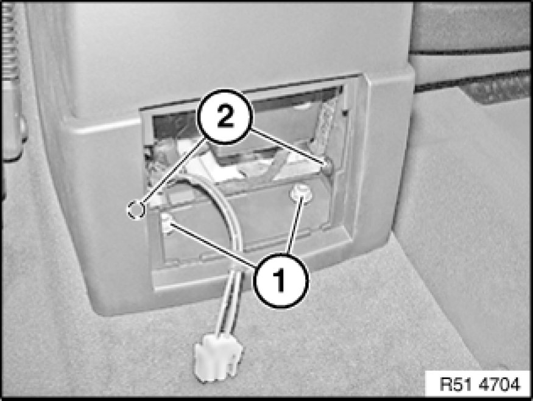

Removing and Installing Storage Compartment (with CD Changer)
51 16 200 - Removing and installing/replacing storage compartment (with CD changer)

Special tools required:
- 00 9 317 00 9 317 Trim Panel Wedge

Necessary preliminary tasks:
- Remove function carrier 51 45 106 - Removing and installing/replacing function carrier on instrument panel trim
Unclip trim (1) towards top.
Remove compartment (2).
Installation:
Clips (3) must not be damaged.
Installation:
When installing compartment (1), make sure guides (2) are inserted into guides (3) on storage compartment (4).

Version with telephone:
Disconnect plug connection (1).
Release protective sleeve (2) and disconnect plug connection underneath.
Unclip catches (1) on gaiter (2) with special tool 00 9 317 00 9 317 Trim Panel Wedge.
Detach gaiter (2) with handle towards front.
Carefully snap out trim (1) towards rear.
Disconnect associated plug connection and remove trim light (1).

Release nuts (1) and screws (2) on rear storage compartment.
Release screws (1 and 2).
Feed out storage compartment (3) upwards over handbrake lever (4) and remove.